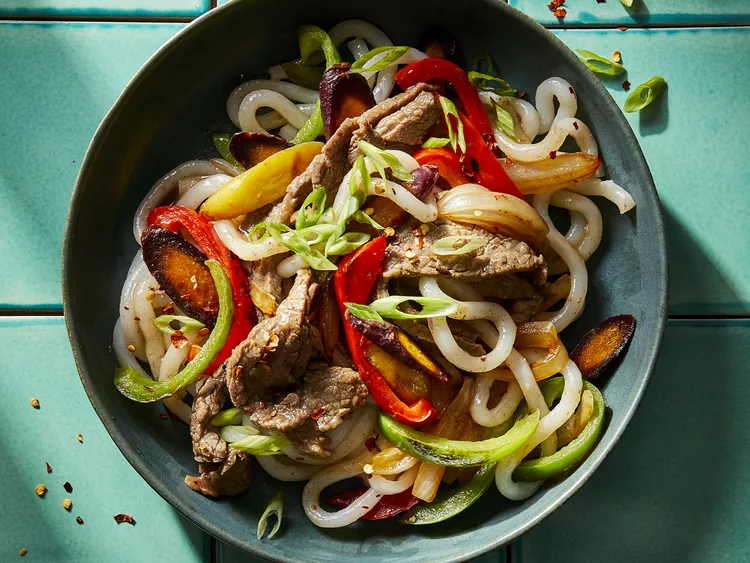

Mix water, pineapple juice, brown sugar, tamari, garlic, ginger paste, and onion powder together in a resealable zip-top bag. Reserve 1/2 cup marinade, add tapioca flour to reserved marinade and set aside. Cut beef into 1-inch pieces; add to the marinade in the bag, seal the bag, and refrigerate for 45 minutes.
Turn on a multi-functional pressure cooker (such as Instant Pot®) and select Saute function. Add oil; add red pepper flakes and sirloin pieces, discarding marinade. Saute until browned, 5 to 7 minutes.
Place bell peppers, onion, and carrots in a steamer bucket. Place bucket on top of meat. Hit Cancel.
Close and lock the lid. Select high pressure according to manufacturer's instructions; set timer for 3 minutes. Allow 10 to 15 minutes for pressure to build.
Release pressure carefully using the quick-release method according to manufacturer's instructions, about 5 minutes. Unlock and remove the lid. Carefully remove vegetable bucket. Set aside.
Switch to Saute function and add noodles. Pour in the reserved marinade with tapioca; stir until sauce is thickened. Add in vegetables. Toss to combine. Serve immediately in bowls; top with everything bagel seasoning and garnish with green onion.
